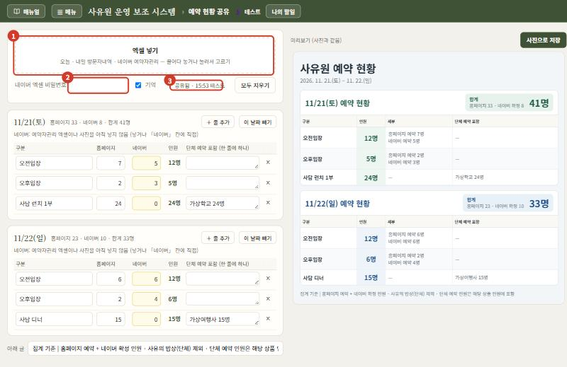
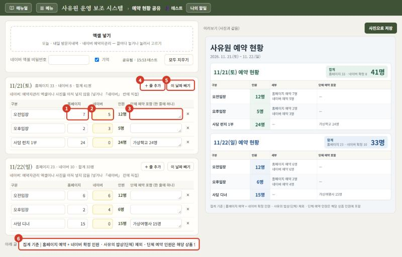
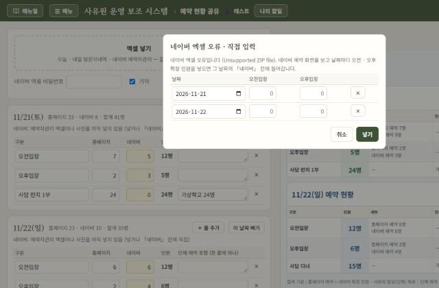
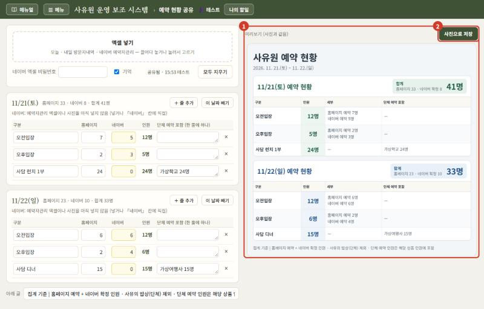

오늘 · 내일 예약 현황을 표로 만들어 팀이 함께 보고, 사진으로 저장해 카카오톡 등으로 공유하는 화면입니다.
이 화면은 오늘 · 내일 2일만 보이고, 고친 내용은 팀 모두에게 공유됩니다. 날이 바뀌면 지난 날짜는 저절로 지워집니다.

다른 날짜 엑셀을 넣었을 때 : 오늘 · 내일이 아닌 방문자내역넣어지지 않고 「○ 방문자내역은 넣지 않았습니다 (이 화면은 오늘 · 내일만)」이 뜹니다. 오늘 · 내일 방문자내역을 다시 받아 넣어 주세요.
같은 날짜를 다시 넣을 때 : 예약이 바뀌어 방문자내역을 새로 받았을 때그 날짜 표만 새 엑셀 내용으로 다시 만듭니다. 그 날짜 표에서 직접 고친 내용은 다시 확인해 주세요.

네이버 엑셀 오류 · 직접 입력 : 네이버 엑셀을 읽지 못할 때 (비밀번호가 틀리거나 파일 오류)
창이 뜨면 네이버 예약 화면을 보고 오늘 · 내일 오전입장 · 오후입장 확정 인원을 적고 「넣기」를 누르세요. 그 날짜의 「네이버」 칸에 들어갑니다.
모두 지우기 : 처음부터 다시 만들 때맨 위 「모두 지우기」를 누르면 만든 표와 고친 내용이 모두 지워집니다. 팀 모두의 화면에서도 지워지니 꼭 필요할 때만 누르세요.

날이 바뀌면 : 어제 만든 표는 어떻게 되나요?자정이 지나면 지난 날짜 표는 저절로 지워지고 오늘 · 내일만 남습니다. 하루 동안은 그대로 유지되고 팀이 함께 봅니다.